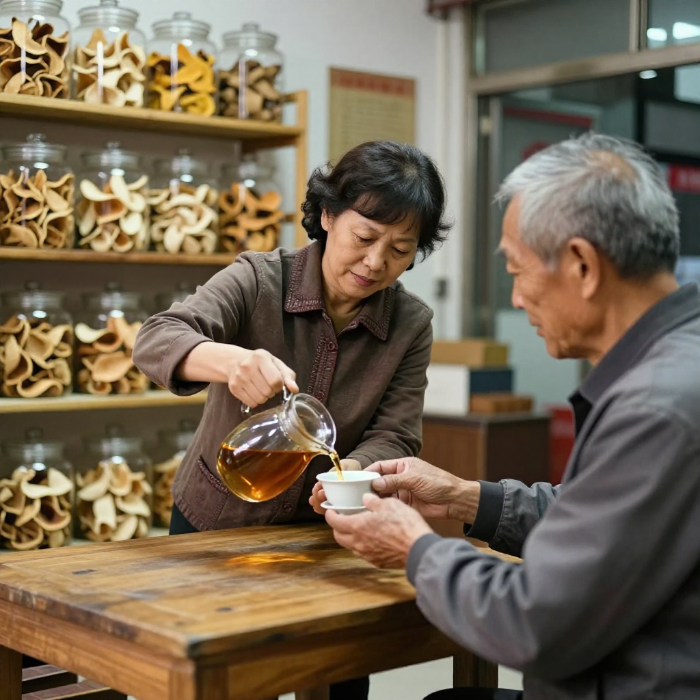

9月30日，《江門日報》報道了一件事：五邑籍南僑機工鄺金源的後人張慧清，從馬來西亞回到江門台山認祖。她手裡只有兩張舊紙條的碎片線索，江門的媒體、文史愛好者、村幹部和鄉親自發聯動，19個小時就精準鎖定了宗族源流。而在更早的2013年，「僑批檔案——海外華僑銀信」已入選聯合國教科文組織《世界記憶名錄》。
這些關於「根」的消息，滢滢姐是在店裡刷到的。那天銀洲湖面上霧濛濛的，她剛把店門口的皮收進來，就聽見門口有人喊。
一、「滢滢，還認得我不？」

「滢滢，還認得我不？」
抬頭一看，是一位頭髮花白的老伯，拖着個小行李箱，笑得眼睛都瞇起來了。他說自己是江門新會出去的，二十多歲就去了加拿大溫哥華，這一走就是三十多年。這次特意回陳皮村看看，走到南門牌坊G04這兒，聞到那股熟悉的柑香，腳就挪不動了。
老伯一進店就深吸了一口氣。
「就係呢個味。我阿媽當年嗰個紅木箱，一打開全部係呢個味。」
滢滢姐趕緊搬凳子倒茶，用的還是十年期的老皮。老伯捧着茶杯，眼圈有點紅，跟她聊起了家裡跟陳皮的故事。
二、媽媽塞進行李箱的那兩包陳皮
原來當年他出國的時候，他媽媽怕他水土不服，硬是在行李箱裡塞了兩大包新會陳皮，用報紙一層一層包得嚴嚴實實。
「阿媽話，去到嗰邊煲湯放兩片，感冒咳嗽煮啲水，真係想家就攞出嚟聞一聞。」
結果那兩包皮，還真成了他在溫哥華安身立命的寶貝。剛到唐人街打工，租的房子又冷又潮，冬天關節疼，房東太太是個廣東人，一看就說，你這是缺了口陳皮水。兩個人一聊，都是江門老鄉，一鍋陳皮生薑水下肚，身子暖了，眼淚也下來了。
滢滢姐說，這樣的故事她聽過太多。新會人早年「下南洋」，行囊裡總少不了陳皮——海上風浪大、濕氣重，陳皮理氣化痰，關鍵時候能頂用；而從南洋一筆一筆寄回江門的，就是一封封「僑批」。一封家書、一片陳皮，連着的是同一條根。
三、唐人街茶樓菜單上的「Chenpi Tea」
後來老伯在溫哥華開了一家小茶樓，菜單上專門有一欄「新會陳皮燉品」。
老外一開始不敢喝，覺得皮怎麼能吃？老伯就學着滢滢姐她們這樣，一點點講，從三江交匯的水土，講到新會柑為什麼要等到果皮油室飽滿才開皮，再講到皮為什麼要放足三年才叫陳皮。
「你別說，老外還真吃這套。而家我茶樓裡面，金髮碧眼嘅客人點名要 Chenpi Tea，仲有人專門買細罐陳皮返屋企，話比香水更令人安心。」
滢滢姐聽得直點頭。她說這幾年這樣的事越來越多：陳皮村這邊來買皮的外國面孔也多了，有馬來西亞回來尋根的，有跟着短視頻找過來的法國博主，還有直接在微信上問「能不能寄到澳洲」的老華僑。滢滢姐的店裡現在還留着一本小冊子，上面記着各國郵寄陳皮要注意什麼——新加坡不能帶什麼包裝，美國要怎麼申報，都是一個個客人教她的。
四、華裔小姑娘的那一口回甘
去年有個華裔小姑娘，跟着爺爺回新會，到滢滢姐店裡，看着滿屋子黑褐油亮的老皮，好奇得不行。滢滢姐抓了一小片讓她嚼。
「好苦啊。」
「你再飲啖水試吓。」
小姑娘眼睛一下就亮了：回甘！臨走她還讓滢滢姐用英文給她寫了「Xinhui Chenpi」幾個字，說回去要給同學講，這是她奶奶的家鄉味道。
送走溫哥華老伯那天，滢滢姐特意給他裝了兩罐皮，一罐五年，一罐十年，還塞了張手寫的小紙條，寫着煮法。老伯提着袋子站在牌坊下，回頭揮手。
「滢滢，下次我帶我孫仔返嚟，你教佢曬皮好唔好？」
滢滢姐笑着應下來，心裡卻在琢磨一件事——外國客人第一次自己動手曬陳皮，會鬧出什麼笑話？
常見問題
什麼是僑批？跟新會陳皮有什麼關係？僑批是早年華僑與家鄉眷屬往來的書信、賬目與匯款票據。2013年「僑批檔案——海外華僑銀信」入選聯合國教科文組織《世界記憶名錄》。江門是著名僑鄉，新會人下南洋時行囊裡常備陳皮，一封僑批、一片陳皮，連着同一份鄉愁。
陳皮能寄到國外嗎？可以，但要按目的地要求準備材料。柑皮屬農產品，一般需原產地證明、檢測報告與合規標籤，部分國家對包裝和申報有額外規定。
為什麼海外華人特別認新會陳皮？一是風味記憶，二是實用價值。早年僑居地濕冷，陳皮理氣化痰、煲湯煮水都用得上，久而久之成了家的味道。
外國人第一次喝陳皮，怎麼入門？從煮水開始最穩妥：一片老皮加冷水，小火煮開三分鐘，關火燜兩分鐘，湯色琥珀、入口回甘，比直接高溫沖泡更容易接受。
第一次買陳皮，選幾年的？日常飲用選三年，價格實在、香氣足；想送長輩或收藏，選五年以上，陳香更沉、湯更滑。
想來新會尋根、看陳皮，去哪裡？來廣東省江門市新會區新會陳皮村南門牌坊G04找滢滢姐，店裡常年備着熱茶，可以當面看皮、免費試喝。
結語
老伯走後，滢滢姐把那張手寫紙條的存根夾進了本子裡。她說，一片皮能走多遠，看的是它連着多少人的記憶。張慧清用19個小時認回了祖先，很多僑胞用一輩子記住了一股柑香——根這個字，看不見，但聞得到。
想聞一聞這股柑香、看一看今年的新皮，來新會陳皮村南門牌坊G04找滢滢姐坐坐。想看陳皮怎麼走出國門、跨境電商和海外倉的變化，翻翻這篇《新會陳皮出海記》；想聽更多海外僑胞與陳皮商人的故事，看這篇《跨過重洋的柑香：海外華僑陳皮商人故事》。
下期預告：外國客人第一次自己動手曬陳皮，會鬧出什麼笑話？聽說去年就有位老外，把好好的新會柑皮曬發霉了，還心疼得不行，直問滢滢姐能不能救。下期滢滢姐就聊聊這件事，保管你聽得直樂。